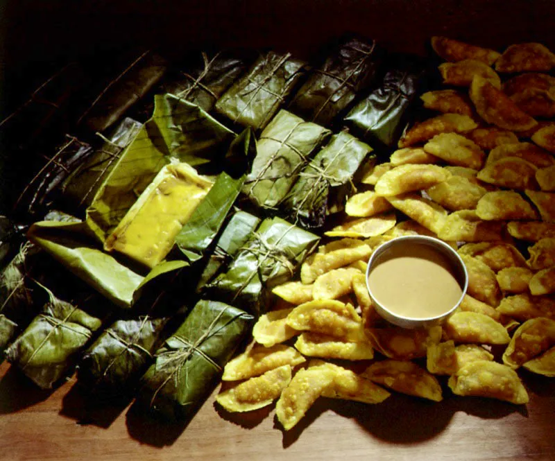
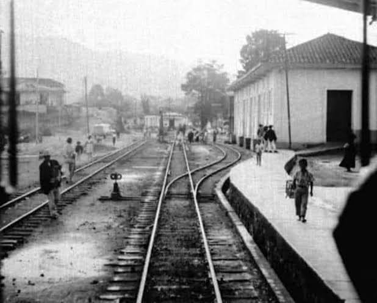
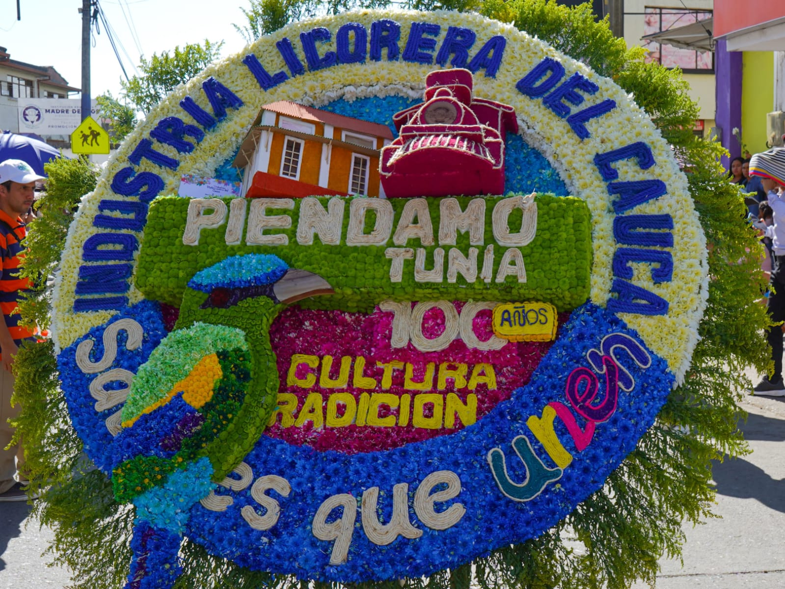

PLATOS TIPICOS
Descripción de los platos típicos de la región.

primer plato tipico
Masa de maiz con carne, pollo y vegetales, en vueltas en hojas de platano y cosinadas al vapor

NUESTRA HISTORIA
Antigua estación del tren. Fundada el 7 de agosto de 1924 por Pedro Antonio Sandoval. Su desarrollo nació del ferrocarril que unía Cali con Popayán.

CULTURA
Descripción de la cultura de la región.